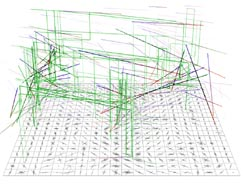
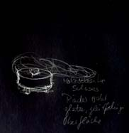
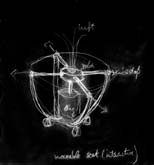
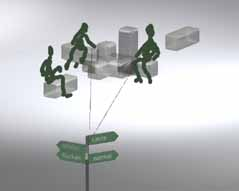

Präsentationsform
von Bewegungsspuren
Das Verfahren, zwei Bilder als Kreuz zu einer behelfsmäßigen
Rekonstruktion einer 3-D Ansicht zusammenzufügen, wird hier Installationsvorgabe.
Es soll ermöglichen, daß der Betrachter die Gehspuren wirklich
als räumliches Event erlebt und nicht nur als eine distanzierte
Abbildung auf einem Monitor. Damit wird auf das Fernziel des Projektes
verwiesen, nämlich die Entwicklung von Architektur.
|
reMind
|
| unten: flexible
Möbel osmotische Säule selbstbeweglicher Stuhl |

|  |
|  |
Ein öffentlicher Platz soll Szenario eines Interaktionsraumes werden, z.B als ein Café oder Ausstellungsgelände, das aus modularen, beweglichen, sich selbst organisierenden Elementen besteht. Es soll als lernfähiges mobiles Mobiliar das Wesen von Orten im öffentlichen Raum und ihre Nutzung durch die Besucher deutlich machen. Die Organisation des Nutz- und Freiraumes, z.B. von Sitzgruppen, Raumteilern und Tischen soll sich an der aktuellen Raumnutzung orinetieren und durch die Inanspruchnahme der Benutzer lernen, sich entsprechend ihrer Vorlieben zu verhalten. Als sturkturelle Maßnahme werden Mediale Elementedes Raumes an den Grenzen von Ruhe- oder Durchgangsbereichen
plaziert. Sessel und Tische bilden Gruppierungen je nachdem wo und wieviel Besucher-Andrang vorhanden ist: zu Mehreren oder Einzeln, in Randbereichen oder im Zentrum. Medienmöbel bilden Kommunikationsumgebungen je nach Benutzung des Raumes. Dadurch bildet sich eine Architektur, die Abbild sozialer Prozesse
ist. Die Raumanordnung ergibt sich aus dem Bewegungsverhalten der Benutzer. Um den Besuchern eine bewußte Einflußnahme auf die Gestalt und die Entwicklung des Cafés zu ermöglichen, soll es online und onsite (Palmsized-Computer) möglich sein, das Geschehen vor Ort zu beeinflussen und sich über die aktuellen Möglichkeiten, welche von der Umgebung angeboten wird, zu informieren (Orientierung, Navigation).
 |
|  |